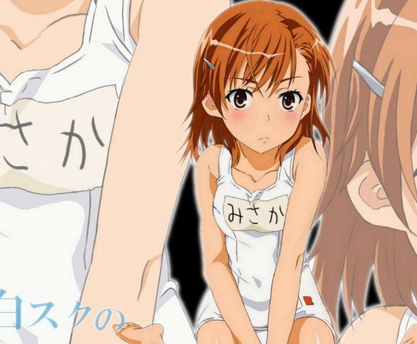
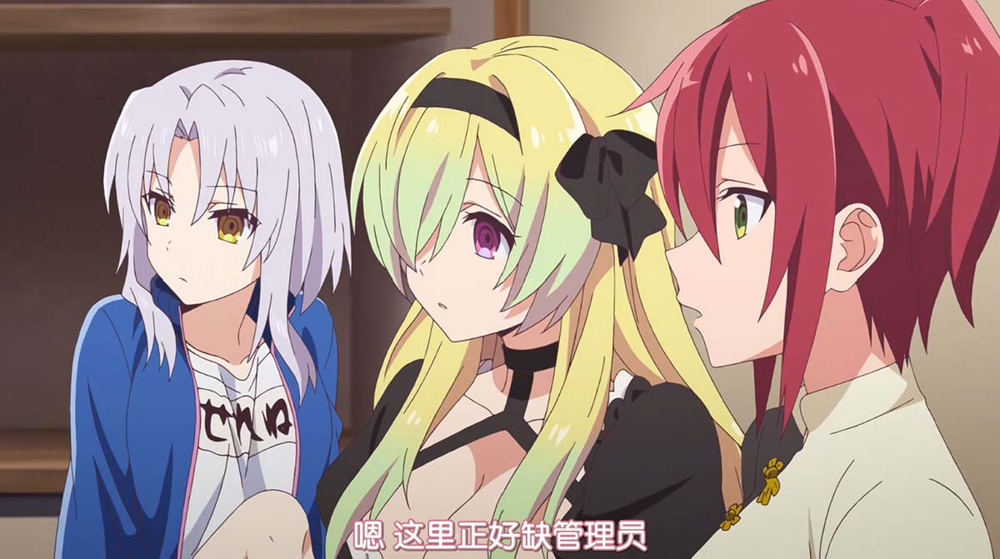
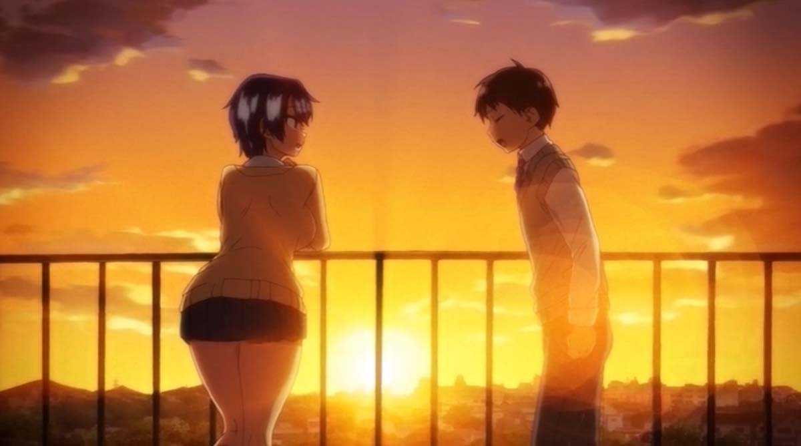

 科学超电磁炮-御坂美琴  本站不提供文件下载，请不要发布下载地址。 本站不提供文件下载，请不要发布下载地址。 本站不提供文件下载，请不要发布下载地址。 本站不提供文件下载，请不要发布下载地址。 【熟肉】OVA まこちゃん日記 ＃1 发表于2021年7月17日由哆啦H萌 夕阳下的告白，我还以为是纯爱，但是看到監督是雷火剣，我知道事情并不简单，故事讲“姬宫诚”向青梅竹马的“薰”告白，然而义兄早已看穿了一切 继续阅读 → 发表在 动画 | 标签为 NTR、雷火剣 | 115条回复  【熟肉】OVA まこちゃん日記 ＃1 发表于2021年7月17日由哆啦H萌 夕阳下的告白，我还以为是纯爱，但是看到監督是雷火剣，我知道事情并不简单，故事讲“姬宫诚”向青梅竹马的“薰”告白，然而义兄早已看穿了一切 继续阅读 → 发表在 动画 | 标签为 NTR、雷火剣 | 115条回复 【熟肉】OVA まこちゃん日記 ＃1 发表于2021年7月17日由哆啦H萌 夕阳下的告白，我还以为是纯爱，但是看到監督是雷火剣，我知道事情并不简单，故事讲“姬宫诚”向青梅竹马的“薰”告白，然而义兄早已看穿了一切 继续阅读 → 发表在 动画 | 标签为 NTR、雷火剣 | 115条回复